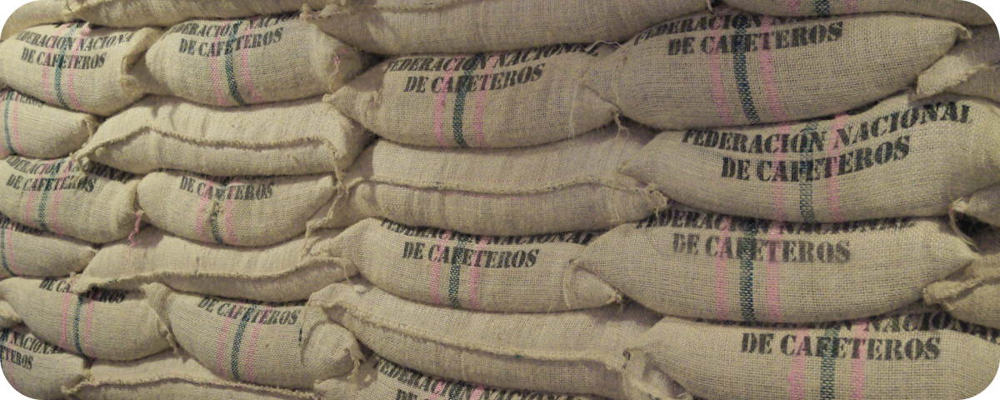
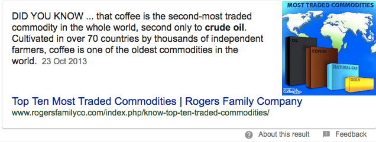

Fri, Aug 11, 2017
An article in Bloomberg last week called Hip Coffee at $4 a Cup Revives African Industry Left Behind observed that the growing interest in niche, single-origin coffees is helping to revive the African coffee sector:
Customers willing to pay a premium for African brews, known for their floral, fruity flavors, are driving purchases of coffee from the continent where the drink is said to have originated.
This spurred a number of similar articles to make ever more optimistic claims like Third Wave Coffee Could Keep Africa's Smaller Growers in Business, African Coffee On The Rise Thanks To Specialty Coffee and, my personal favourite, Hipster Demand for Fancy Coffee Is Really Helping Africa's Farmers.
Before us fancy coffee drinkers get too self-congratulatory, it's worth looking at the situation in a little more detail.
Read More…
Fri, Jul 28, 2017
Sustainability is one of the most over-used but under-defined words in the coffee sector. Last month the International Trade Centre (ITC) released a comprehensive report trying to put specific numbers on this nebulous concept. The report measures the spread of voluntary sustainability standards in 9 different commodities, covering 14 certification standards. It found that these standards, like Fairtrade or Organic, are now a core part of mainstream commodity markets, and no longer a novelty or niche.
This link between "sustainability" and certification standards is just one interpretation, but it is a useful snapshot of agricultural markets in general, and coffee more specifically.
Read More…
Fri, Jul 14, 2017
China might not be the first country you think of when it comes to coffee, but its influence is growing. It's no surprise that as China develops it's drinking more coffee, but its potential to be one of the world's major producers is less well known. China is rapidly becoming a force on the global coffee economy, but we don't seem to know much about it.
Read More…
Fri, Jun 30, 2017
Last week, the United States Department of Agriculture (USDA) released their twice-yearly estimate of global supply and demand of coffee. This estimate contains a forecast for the upcoming 2017/18 coffee year, which starts in October, giving us an indication of where the coffee sector might be going up to September 2018.
Obviously, much can change in that time, particularly as weather events become more unpredictable, but there are still some useful morsels to be found in the data.

Read More…
Fri, Jun 16, 2017
In March of this year, Vietnam made headlines in the coffee industry by exporting more coffee than Brazil to become the world's top coffee exporter that month.
This isn't the first time this has happened, but it's still surprising. Brazil is by far and away the largest coffee producer in the world, accounting for around a third of world production, while Vietnam generally produces about half as much. But Brazil also drinks a significant amount of coffee, in fact it's the second largest coffee consumer worldwide after the USA. This means that around 40% of the crop never leaves the country. In Vietnam, on other hand, while local consumption is generally increasing, it still only accounts for less than 10% of the total. Could Vietnam actually become the world's single largest supplier of coffee?
Read More…
Fri, Jun 2, 2017
One of the most widely known facts about coffee is that it's the second most traded commodity in the world, after oil. It's such common knowledge that Google even helpfully points it out.

But where does this fact come from, and what does it even mean? Are we talking the total value of coffee in the world, or the volume, or the number of contracts? Oil is undoubtedly one of the most important commodities to the global economy, but is coffee really number 2?
Read More…